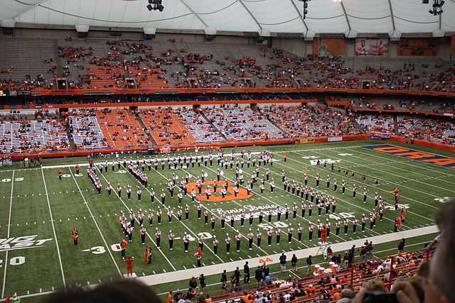

Orange After Dark
Orange After Dark is a program run by the Office of Student Activities that creates fun events for students throughout the semester.
Some activites they host are skating at the rink, craft nights, and access to movie premieres at Regal.
Most events are free, but the ones that aren't usually only cost $2-3!
Games in the Dome
A game in the Carrier Dome is something that all S.U. students need to experience!
There's nothing quite like walking in the dome for the first time and seeing the sea of orange throughout the stadium.
This is a great way to show your school spirit!
